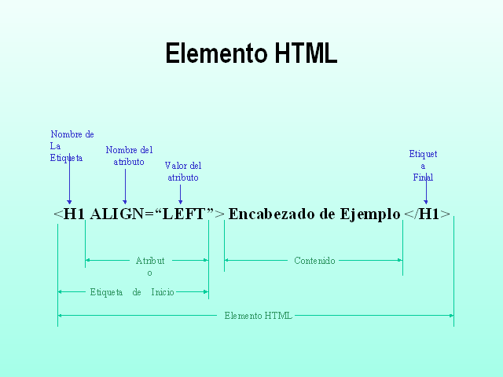

Etiquetas Básicas de HTML

- Comentarios: Para escribir anotaciones que sirven para ayudar a la comprensión del código. Lo que se escribe dentro de esta etiqueta es ignorado por el navegador y no se muestra en la página.
- b: Aplica negrita al texto incluido entre las etiquetas (es equivalente usar strong)
- i: Aplica cursiva al texto incluido entre las etiquetas (es equivalente usar em)
- u: Aplica subrayado
- Font: Delimita un texto con un formato de fuente determinado definido por sus propiedades:
- font size=”X”>: Indica el tamaño del texto.
- font color=”#RRGGBB”: Define el color del texto, donde cada letra RRGGBB es un valor hexadecimal (de 0 a F) que indica el color.
- font face=”arial”: Determina el tipo de fuente de texto, es decir, la tipografía.
- La etiqueta font puede incluir los tres parámetros (tamaño, fuente y color): font size=X color=#XXYYZZ face=fuente escogida
- h1, h2, h3, h4, h5, h6: Indican 6 niveles de formato de encabezados, en los que h1.../h1 delimitaría el tipo de fuente de mayor tamaño.
- br: Introduce un salto de línea.
- p: Delimita un párrafo de texto.
- p align=’center’: Texto del párrafo con alineación centrada.
- p align=’left’: Párrafo alineado a la izquierda.
- p align=’right’: Párrafo alineado a la derecha.
- p align=’justify’: Texto del párrafo con alineación justificada.
- hr: Inserta una línea horizontal.
- div: Se utiliza para delimitar una sección dentro del documento, de forma que agrupe un número de elementos para luego añadirle un estilo determinado o realizar operaciones sobre ese bloque específico.
- Lista no numerada
- ul: Inicio de la lista
- li: Primer elemento de la lista
- Lista numerada
- ol: Inicio de la lista
- li: Primer elemento de la lista
- img src="dirección de la imagen": Inserta una imagen que se encuentra en la ruta indicada por "dirección de la imagen". También se pueden incluir una serie de propiedades:
- img ... border="X": Establece un borde de X pixels en torno a la imagen
- img ... height="XX" width="YY": Establece un tamaño de la imagen, donde XX e YY son al altura y anchura en pixels respectivamente.
- img ... alt="texto explicativo": Se muestra un texto al pasar el ratón sobre la imagen.
- img ... align="bottom": Alineación inferior de la imagen respecto al texto.
- img ... align="middle": Alineación de la imagen en medio del texto.
- img ... align="top": Alineación superior de la imagen respecto al texto.
- img ... align="left": Alineación izquierda de la imagen en el párrafo.
- img ... align="right": Alineación derecha de la imagen en el párrafo.
- img ... hspace="x": Espacio horizontal en pixeles entre la imagen y el texto.
- img ... vspace="y": Espacio vertical en pixeles entre la imagen y el texto.
- table: Define dónde comienza y termina la tabla.
- table width="X": Determina la anchura de la tabla. Puede darse en píxeles o en porcentaje.
- table height="X" Determina la altura de la tabla en píxeles.
- table border="X": Establece el grosor en píxeles del borde de la tabla
- table cellspacing="X": Define el espacio en píxeles entre las celdas.
- table cellpadding="X": Define el espacio en píxeles entre el borde y el texto.
- tr: Indica el comienzo y el fin de cada una de las filas de la tabla.
- td: Indica el comienzo y el fin de cada una de las columnas o celdas dentro de las filas.
- a href=”http://www.ejemplo.com”>Nombre del enlace: Cuando se pulsa sobre el texto "Nombre del enlace" en la web, se va al vínculo indicado en la dirección de href.
- a href=”mailto:ejemplo@ejemplo.com”>Nombre del enlace: Cuando se pulsa sobre el texto "Nombre del enlace" en la web, se abre una ventana para enviar un correo electrónico a la dirección indicada.
Este tipo de páginas no llevan etiquetas
, sino que se utilizan los marcos o frames. En primer lugar se define un frameset o contenedor y dentro se incluyen los distintos frames, que subdividen la página en marcos. Cada frame corresponderá a un archivo html que deberá ser programado aparte con el contenido correspondiente.- frameset:
- frameset rows=" , ">: Divide la página en marcos horizontales.
- frameborder="NO": Evita que se vea el borde entre los marcos.
- framespacing="X": Establece X pixels de separación entre los marcos.
- scrolling="NO": Evita que aparezca una barra de scroll dentro del marco.
- scrolling="auto": Mostrará la barra de scroll sólo si es necesario.
Un formulario es una sección dentro de un documento HTML que sirve para que los usuarios introduzcan una serie de datos y los envíen a un servidor web o a un servidor de correo. Las etiquetas que se usan principalmente en los formularios HTML son:
- form: Indican el comienzo y el fin del formulario.
- label: Delimitan una etiqueta de texto dentro del formulario.
- input: Indican el principio y final de algún control de entrada de datos por parte del usuario. Pueden ser de varios tipos, según se defina su atributo type:
- text: Entrada de texto.
- password: Igual que text pero el texto introducido se presentan de tal modo que se oculten los caracteres, normalmente mediante un serie de asteriscos. Este tipo de control suele utilizarse para introducir contraseñas.
- checkbox: Casilla de verificación o checkbox.
- radio: Elemento de selección entre varias opciones de tipo radio.
- submit: Botón para enviar el formulario.
- image: Botón para enviar el formulario pero con una imagen de fondo.
- reset: Botón para borrar todo el contenido de datos del formulario.
- hidden: campo oculto, envía una información que no se muestra en el formulario.
- file: Permite adjuntar un archivo desde el ordenador.
- select: Delimita el principio y el fin de una lista desplegable de opciones. Cada opción se indica mediante la etiqueta
- textarea: Permite introducir un texto largo.
Atributos HTML
Los atributos en HTML se pueden considerar como información adicional que se coloca siempre en la etiqueta de apertura, esto para añadir, complementar información o significado al elemento HTML al que estamos colocando, van siempre dentro de la etiqueta de apertura y sirven para modificar o agregar alguna característica al contenido.
- Id =” ”: Para identificar un elemento único.
- class =” ”: Identificador múltiple.
- align =” ”: Alineación de contenido.
- border =” ”: Para darle borde al contenido.
- style =” ”: Para darle un estilo al contenido.
- background-color =” ”: Para color de fondo.
- href =” ”: Para enlaces html.
- height =” ”: Para determinar altura.
- width =” ”: Para determinar ancho.
- src=“ ”: Para imágenes.
Un atributo se escribe de la siguiente manera: Atributo=“valor” en esa forma, el nombre del atributo, seguido del signo igual (=) y entre comillas el valor, todo esto siempre dentro de la etiqueta de apertura.
Valores HTML
Los valores son complementos de los atributos ya que cuando se hace uso de un atributo HTML se debe especificar su valor, este puede representar una cantidad exacta, característica especifica o simplemente en que medida se ejecutará dicho atributo. El valor se expresa entre comillas después del signo de (=), de acuerdo al atributo, pueden haber una variedad de valores disponibles.